WALKOUT: A BRIEF HISTORY OF STUDENT ORGANIZING
The 1990s • From Brazil in the 1960s to the United States in the 1970s, student protest against austerity and tuition increases is a recurring theme. This unrest gave rise to tuition protests that continued to surface worldwide into the 2000s. In 1999, students at UNAM (the National Autonomous University of Mexico) would shut down and occupy their institution after the announcement of major tuition increases.
Just as students had used collective artmaking as a tactic in earlier decades — exemplified by the work of the Atelier Populaire in France, Poster Factory at University of Wisconsin, and WIMP Collective in New York City — students from UNAM and ENAP (the National School of Fine Arts) came together as Sublevarte Colectivo to create graphic material in support of the strike.
The posters produced by Sublevarte Colectivo played a key role in articulating the demands of the student strike, but this group of artists did not disband after the end of student actions in 2000. As a collective, they continue to use artmaking to bolster social movements across Mexico, supporting the Zapatistas, the flower sellers of Atenco, and the striking teachers of Oaxaca.
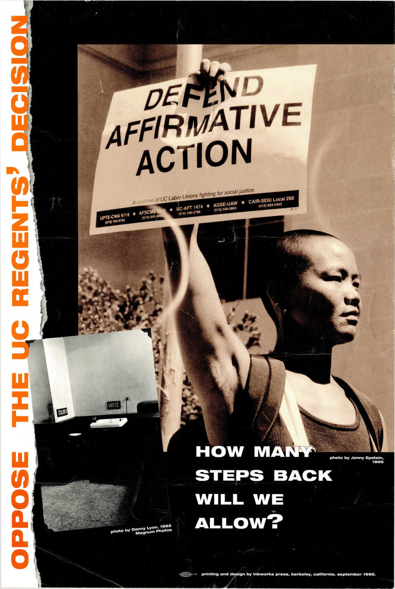
Is He Protecting You?
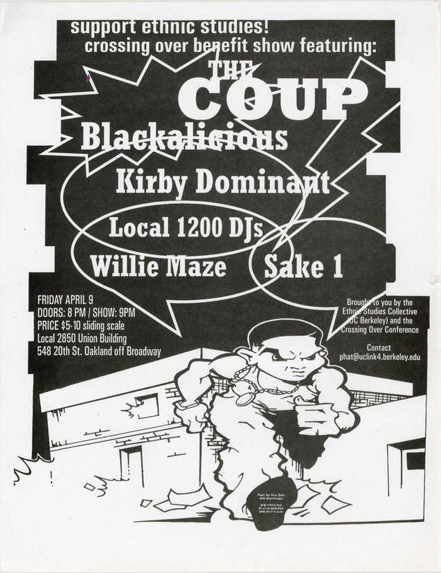
Hootenanny
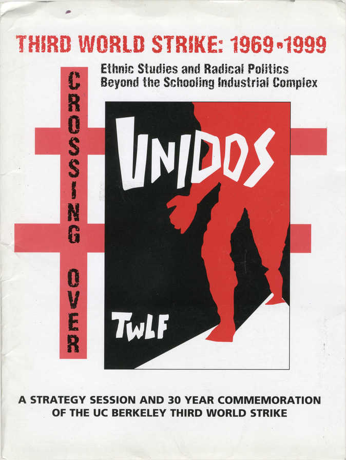
The War Goes On Because We Let It
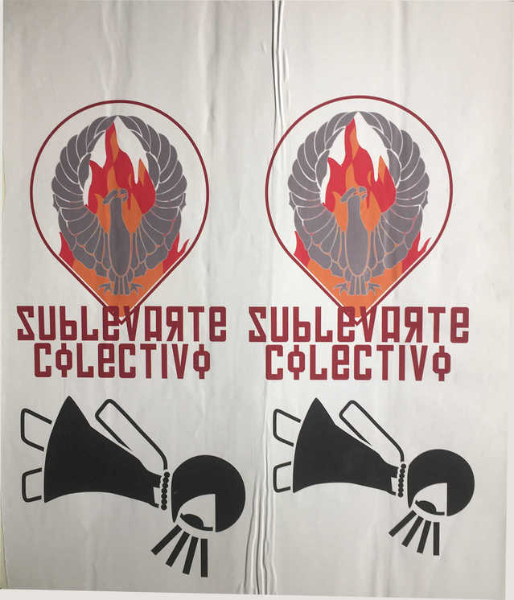
The Student Movement in the '50s
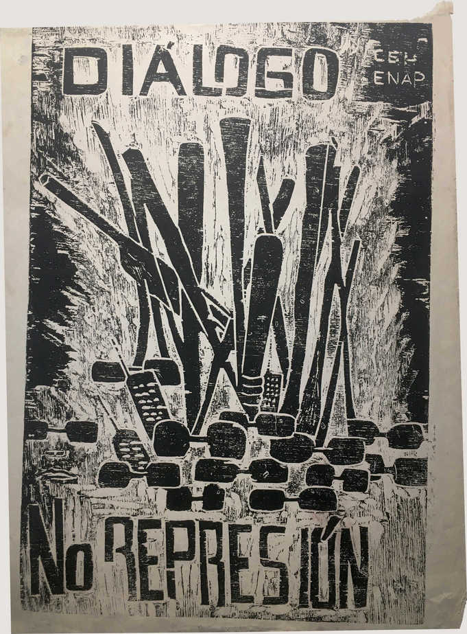
Proposal for a Women's Liberation Campaign at B.U.
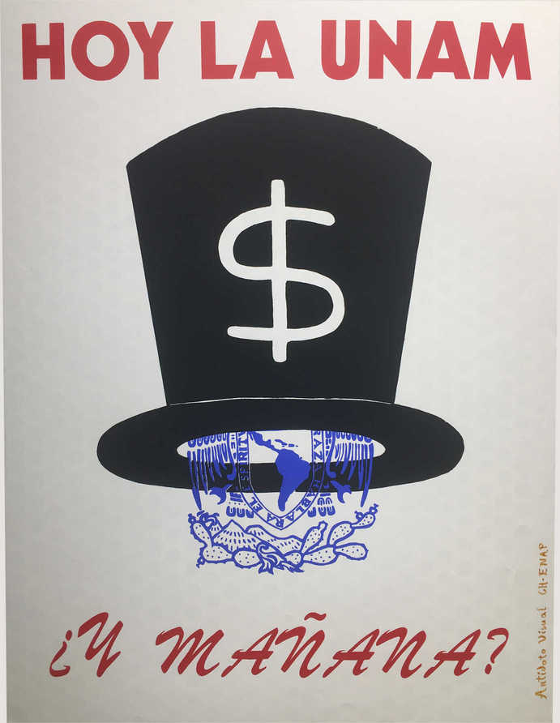
Ramparts
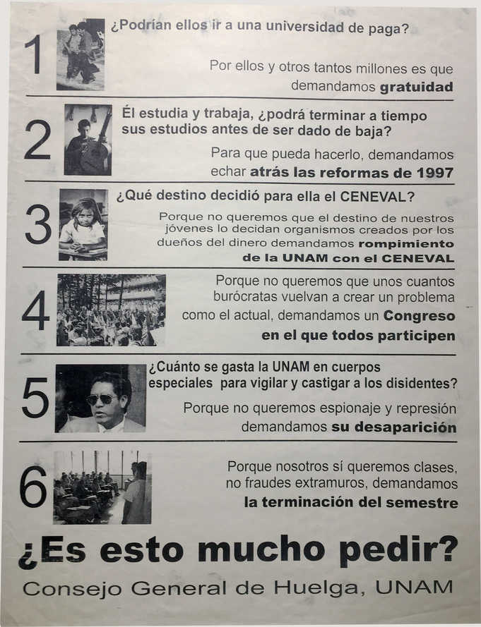
Guardian. February 22, 1969
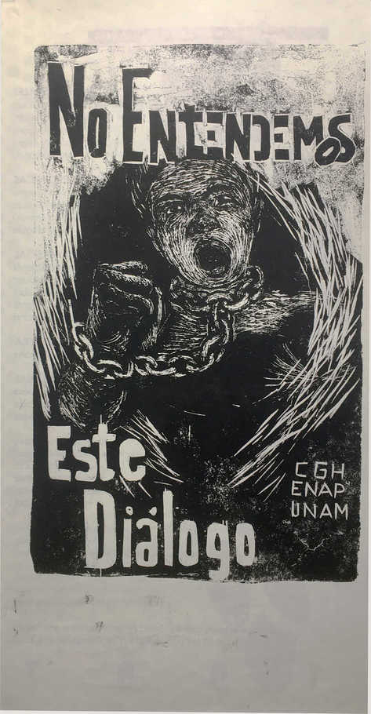
Bring the war home!
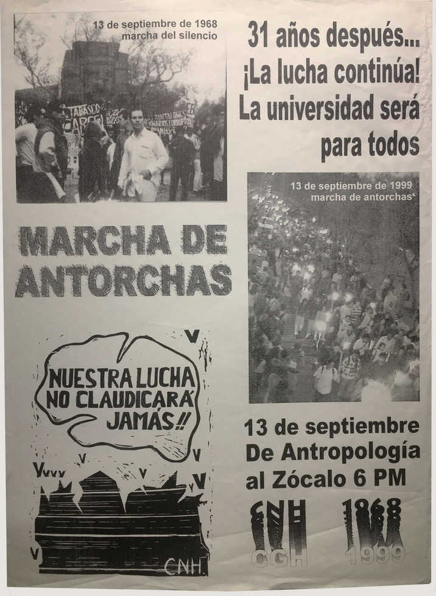
How Harvard Rules
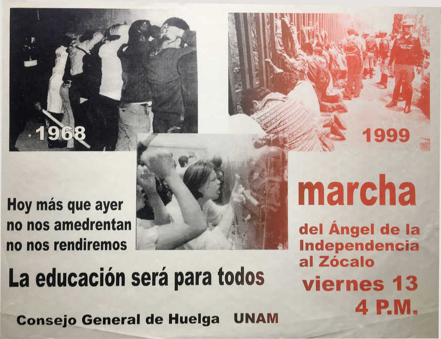
The University-Military Complex: A Directory and Related Documents
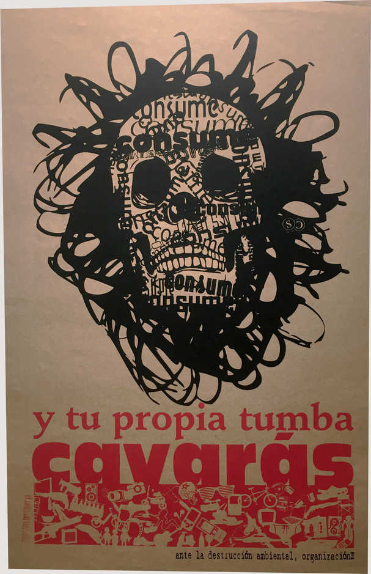
STRIKE: Confrontation at Harvard 1969